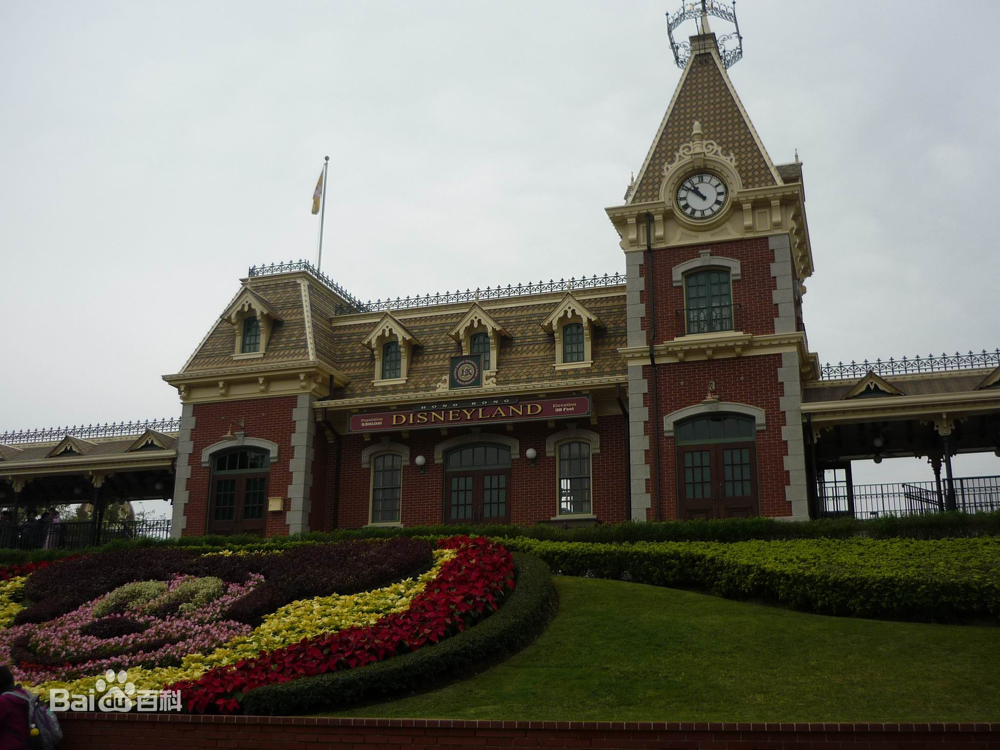
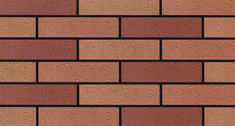
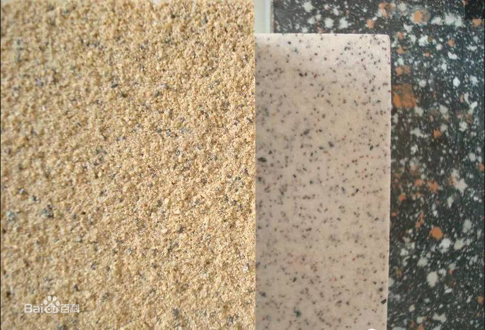

颜色规格丰富，主要规格有25*25mm、23*48mm、45*45mm、45*95mm、45*145mm、95*95mm、100*100mm、45*195mm、100*200mm、50*200mm、60*240mm、200*400mm等。外墙砖既可库存销售，也可根据客户对规格和颜色的特殊要求定制生产。外墙砖不仅装饰整个建筑物，同时因为其耐酸碱，物理化学性能稳定，对保护墙体有重要作用，还能防寒保温。为满足外墙装饰个性化与丰富性的要求，外墙装饰技术和手法朝高品位、高档次发展。外墙砖注重整体搭配，装饰手法丰富，装饰风格多样化，装饰效果突出。



真石漆优点简介？
优点一：
装饰性强具有仿天然石材、大理石、花岗岩的厚浆型涂料。自然色泽，具有天然石材的质感，各种线格设计，能提供各种立体形状的花纹结构，能从视觉上彰显整个建筑的高雅与庄重之美 ，是外墙干挂石材最佳替代品。 地平线真石漆 地平线真石漆
优点二：
适用面广 可用于水泥砖墙、泡沫、石膏、铝板、玻璃等多种基面，且可以随建筑物的造型任意涂装。
优点三：
水性环保 真石漆采用水性乳液，无毒环保，符合人们对环保的要求。
优点四：
耐污性好 90%污物难以附着，雨水冲刷过后，亮丽如新，人工清洁更容易。
优点五：
使用寿命长 高品质的真石漆使用寿命可长达15年。
优点六：
经济实惠 质量好的真石漆，一平米市场价格大约在40-150元(含施工)，干挂石材含安装费至少在400元/平米以上，相比之下，真石漆占有绝对的性价比优势。 优点七：无安全隐患 外墙采用石材干挂将加载上千吨额外负担,严重危及生命财产。真石漆用料4-5㎏/㎡,仅占石材重量的1/30,附着力强，不会像石材整体脱落，有效保障安全。
电话:15517399768 真石漆 水包水多彩涂料 真石漆 真石漆价格 真石漆设备外墙 真石漆外墙 真石漆报价 真石漆施工工艺 真石漆厂家外墙 真石漆施工方案外墙 真石漆施工工艺 真石漆施工价格外墙 真石漆施工价格 真石漆生产厂家 真石漆施工 真石漆施工报价什么是 真石漆 真石漆包工包料价格 真石漆生产外墙 真石漆图片白色 真石漆仿石涂料和 真石漆喷 真石漆多彩 真石漆 真石漆涂料价格品牌 真石漆外墙涂料 真石漆 真石漆厂墙面 真石漆天然 真石漆厂家 真石漆底漆 真石漆工艺喷涂 真石漆 真石漆的施工工艺 真石漆厚度 真石漆喷涂 真石漆质量 真石漆外墙涂料 真石漆桶黑色 真石漆米黄色 真石漆墙面 真石漆施工工艺外墙 真石漆施工规范 真石漆材料外墙喷 真石漆 真石漆生产工艺 真石漆是水性涂料吗 真石漆材质外墙 真石漆配方 真石漆施工队 真石漆技术 真石漆原料 长葛真石漆 长葛真石漆价格 长葛真石漆设备外墙 长葛真石漆外墙 长葛真石漆报价 长葛真石漆施工工艺 长葛真石漆厂家外墙 长葛真石漆施工方案外墙 长葛真石漆施工工艺 长葛真石漆施工价格外墙 长葛真石漆施工价格 长葛真石漆生产厂家 长葛真石漆施工 长葛真石漆施工报价什么是 长葛真石漆 长葛真石漆包工包料价格 长葛真石漆生产外墙 长葛真石漆图片白色 长葛真石漆仿石涂料和 长葛真石漆喷 长葛真石漆多彩 长葛真石漆 长葛真石漆涂料价格品牌 长葛真石漆外墙涂料 长葛真石漆 长葛真石漆厂墙面 长葛真石漆天然 长葛真石漆厂家 长葛真石漆底漆 长葛真石漆工艺喷涂 长葛真石漆 长葛真石漆的施工工艺 长葛真石漆厚度 长葛真石漆喷涂 长葛真石漆质量 长葛真石漆外墙涂料 长葛真石漆桶黑色 长葛真石漆米黄色 长葛真石漆墙面 长葛真石漆施工工艺外墙 长葛真石漆施工规范 长葛真石漆材料外墙喷 长葛真石漆 长葛真石漆生产工艺 长葛真石漆是水性涂料吗 长葛真石漆材质外墙 长葛真石漆配方 长葛真石漆施工队 长葛真石漆技术 长葛真石漆原料